Tudo o que você precisa para reservar o consultório da Dra. Thalia Santiago por hora ou por período: cadastro, app no celular, reservas, pagamento, calculadora e o dia do atendimento.
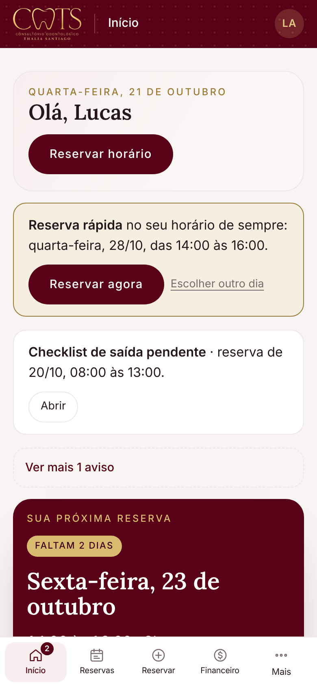
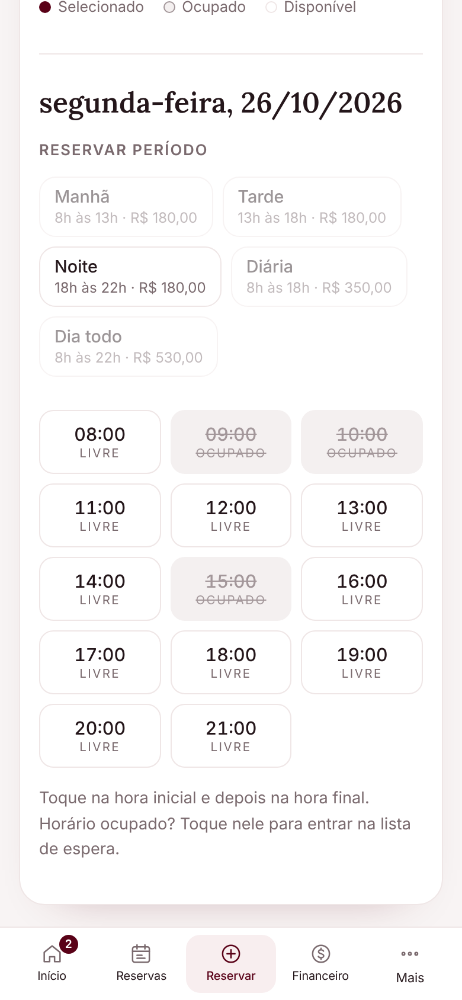
dra-thalia-santiago.vercel.app
Rua Juiz de Fora, 52, Galeria Êxito, sala 208
Centro, Ipatinga/MG · WhatsApp (31) 99574-5413
O consultório fica no Centro de Ipatinga, pronto para o seu atendimento. Você escolhe o dia e o horário pelo site ou pelo app, paga com Pix e chega no horário marcado. Tudo em quatro passos:
| Por horaReservas de até 3 horas | R$ 50/h |
| PeríodoManhã 8h–13h · Tarde 13h–18h · Noite 18h–22h. Acima de 3 horas dentro do mesmo período, ou o período inteiro | R$ 180 |
| Dois períodos seguidosEx.: tarde + noite (13h–22h) | R$ 360 |
| DiáriaDas 8h às 18h | R$ 350 |
| Dia todoDas 8h às 22h | R$ 530 |
| Plano mensal · diária1x por semana, mesmo dia (R$ 250 a diária) | R$ 1.000/mês |
| Plano mensal · meio período1x por semana, mesmo período (R$ 150 cada) | R$ 600/mês |
Valores vigentes na data deste manual. O site sempre mostra o valor atualizado antes de você confirmar.
Exemplo: das 11h às 15h (pega a manhã e a tarde). Esse tipo de reserva não é feito pelo site: combine direto com a Dra. Thalia pelo WhatsApp. O próprio site mostra o botão Falar com a Dra. Thalia.
Rua Juiz de Fora, 52, Galeria Êxito, sala 208
Centro, Ipatinga/MG
WhatsApp (31) 99574-5413
Para manter a agenda organizada, todo cadastro novo passa pela Dra. Thalia. Ela recebe um aviso na hora e libera o seu acesso.
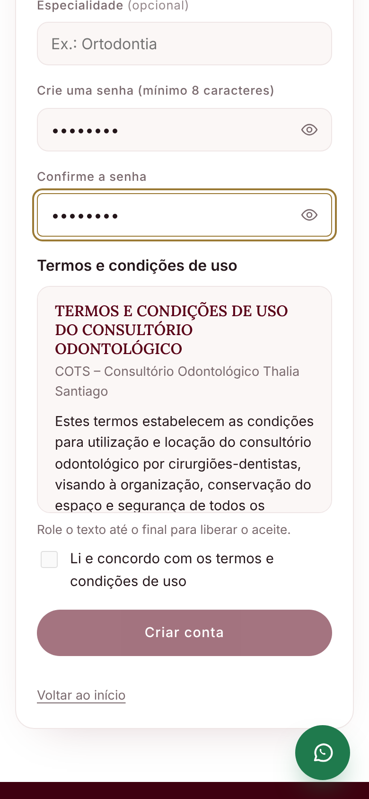
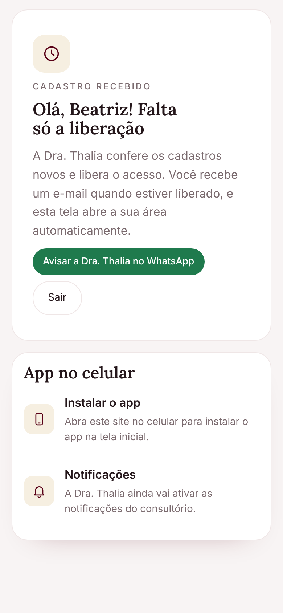
O site vira um aplicativo na tela inicial do seu celular, sem loja e sem ocupar espaço. Ele abre em tela cheia e avisa você sobre as suas reservas.
Depois de entrar, você também encontra o botão Instalar app em Mais → Perfil.
No iPhone, o app tem login próprio: entre de novo com o seu e-mail e senha na primeira vez que abrir.
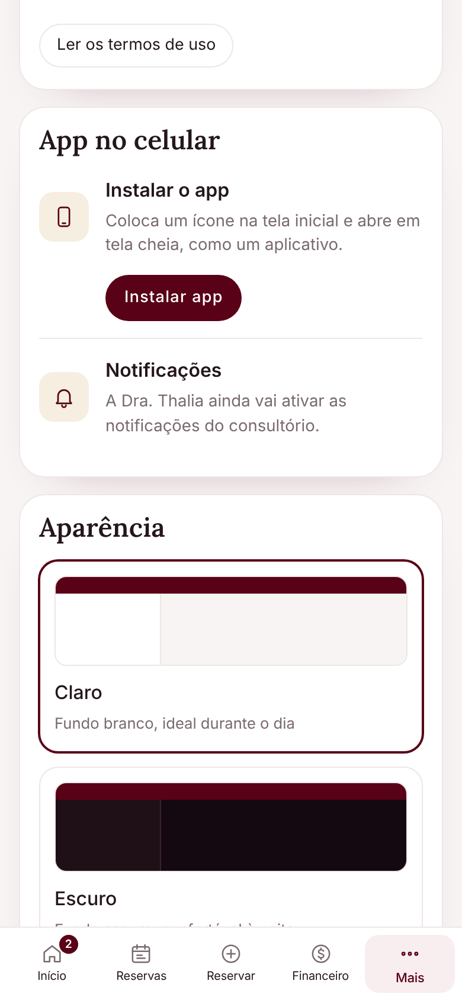
Com o app instalado, vá em Mais → Perfil e toque em Ativar notificações. Depois, aceite a pergunta do celular. Você passa a receber:
No Perfil você também escolhe o tema claro ou escuro e atualiza os seus dados.
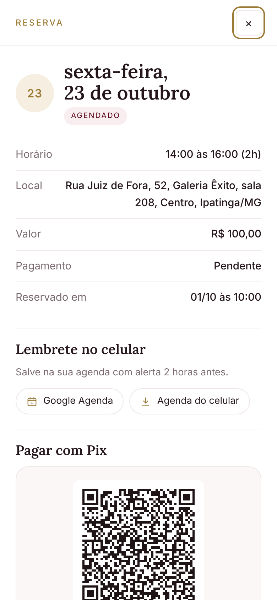
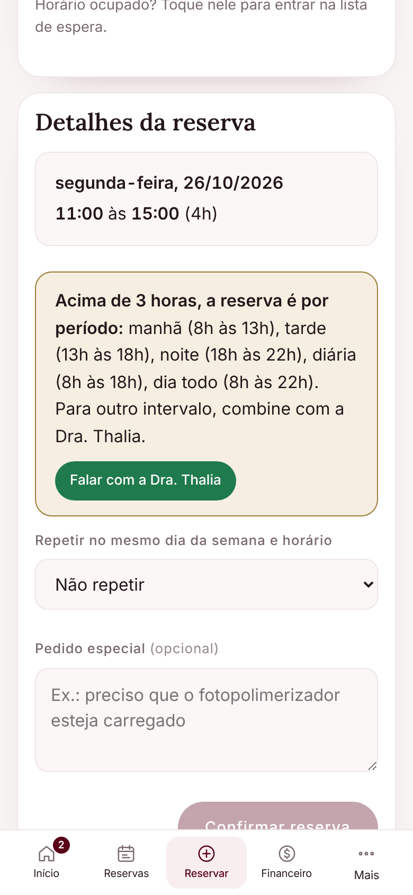
Em Reservas você vê as próximas e o histórico. Toque numa reserva para abrir os detalhes:
Se você selecionar mais de 3 horas passando de um período para outro (por exemplo, das 11h às 15h), o site avisa, trava o botão de confirmar e mostra Falar com a Dra. Thalia. É só combinar com ela pelo WhatsApp.
Horários riscados já estão reservados, seja por outro dentista ou por atendimento da própria Dra. Thalia. Por privacidade, o site não mostra quem está usando.
Atende toda semana no mesmo dia? Com o plano mensal, o seu horário fica garantido e sai mais barato.
R$ 1.000 por mês
R$ 250 a diária (avulsa: R$ 350)
R$ 600 por mês
R$ 150 o período (avulso: R$ 180)
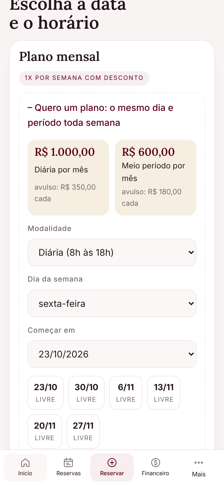
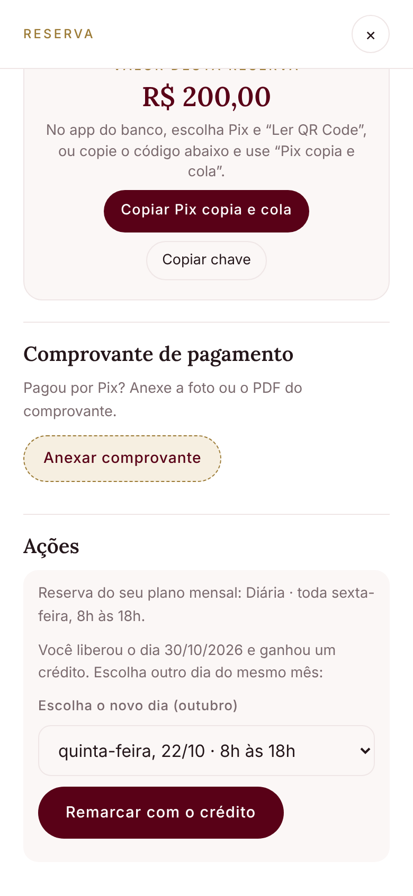
Em Financeiro você vê as horas do mês, quanto já foi pago e o total em aberto, com um Pix único para quitar tudo. Depois de pagar, envie o comprovante pelo botão de WhatsApp da mesma tela.
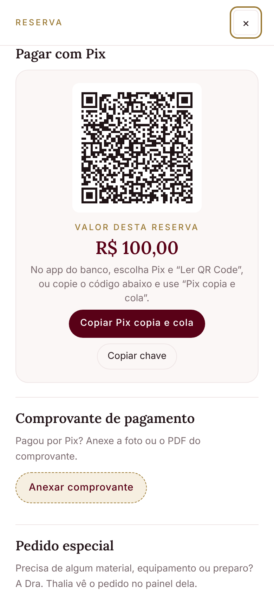
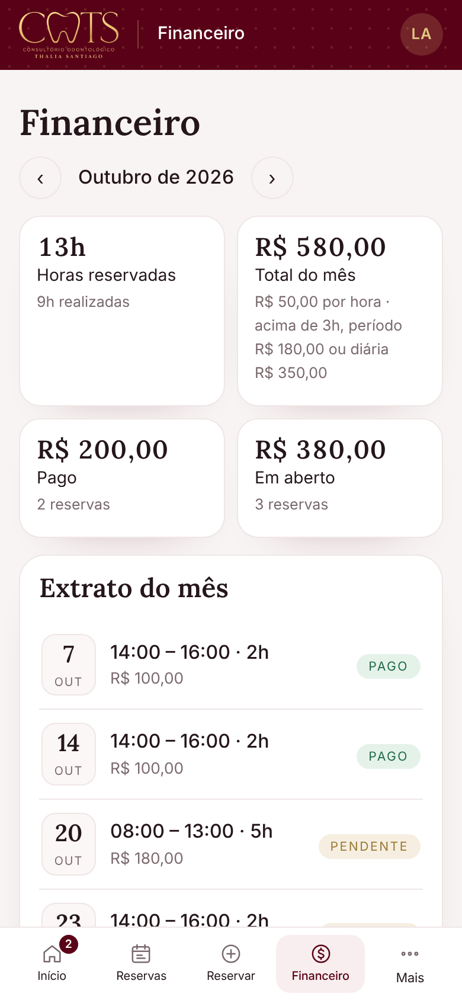
Em Mais → Calculadora você faz as contas do dia a dia a partir do peso e da idade do paciente. Cada resultado mostra a fonte (bula ou referência) e a data em que foi conferida.
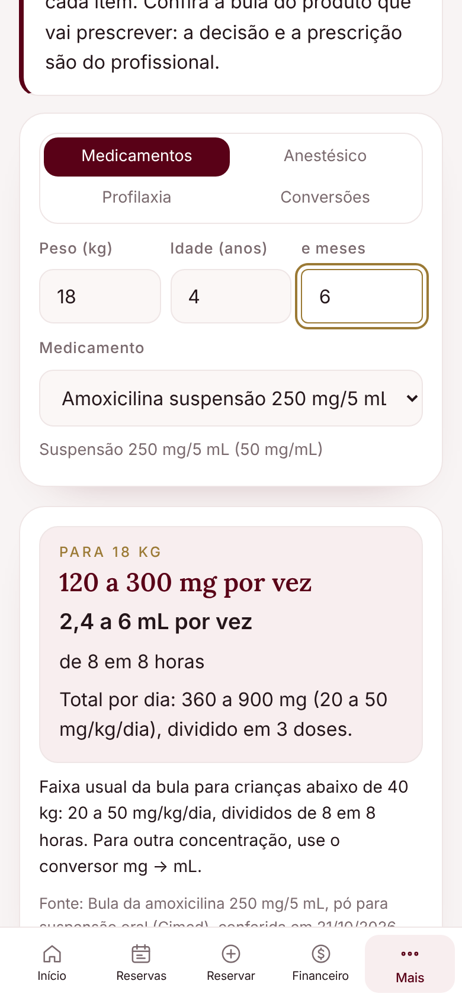
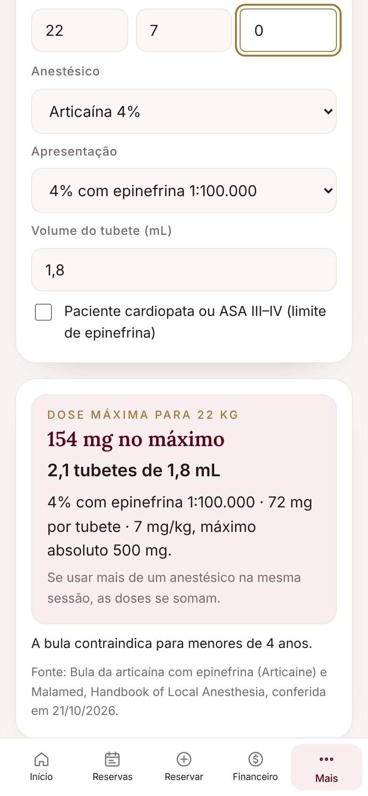
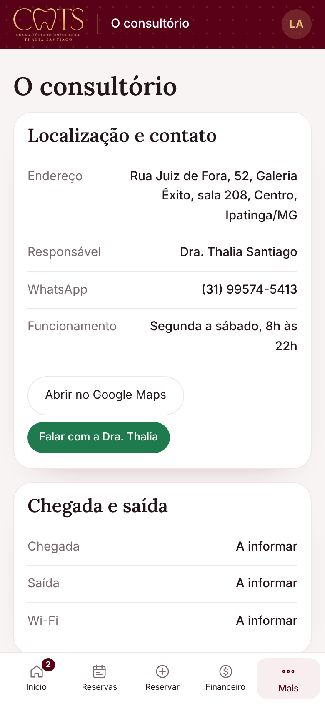
Na tela Início aparece Abrir checklist. Confirme cada item:
Equipamento com defeito ou faltando material? Use Avisar um problema e descreva o que aconteceu. A Dra. Thalia recebe na hora.
Depois do atendimento você pode dar uma nota para o consultório. Os avisos da Dra. Thalia (feriados, manutenção, novidades) aparecem no mural da tela Início.
| InícioPróxima reserva, reserva rápida, checklist e mural | |
| ReservasPróximas, histórico, remarcar, cancelar, Pix | |
| ReservarCalendário, horas e períodos, lista de espera, plano mensal | |
| FinanceiroTotal do mês, Pix único, recibo em PDF | |
| MaisConsultório, calculadora, perfil, app, notificações, sair |
WhatsApp (31) 99574-5413
Instagram @dra.thaliasantiago
Rua Juiz de Fora, 52, Galeria Êxito, sala 208
Centro, Ipatinga/MG
À esquerda: site e app · À direita: WhatsApp